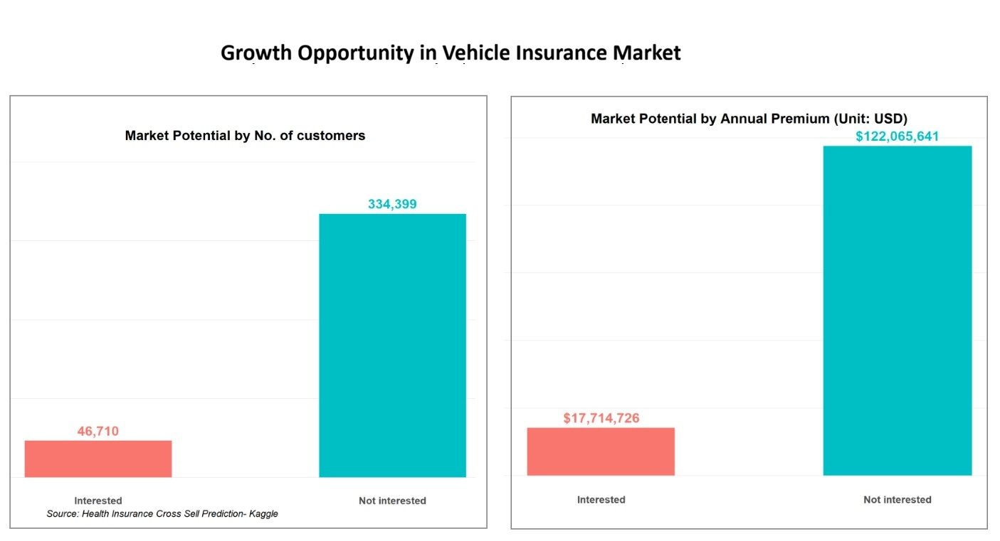
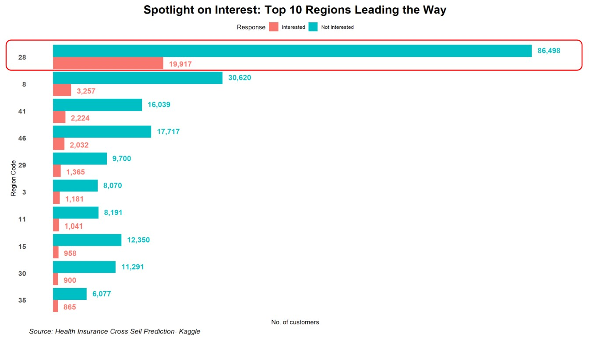
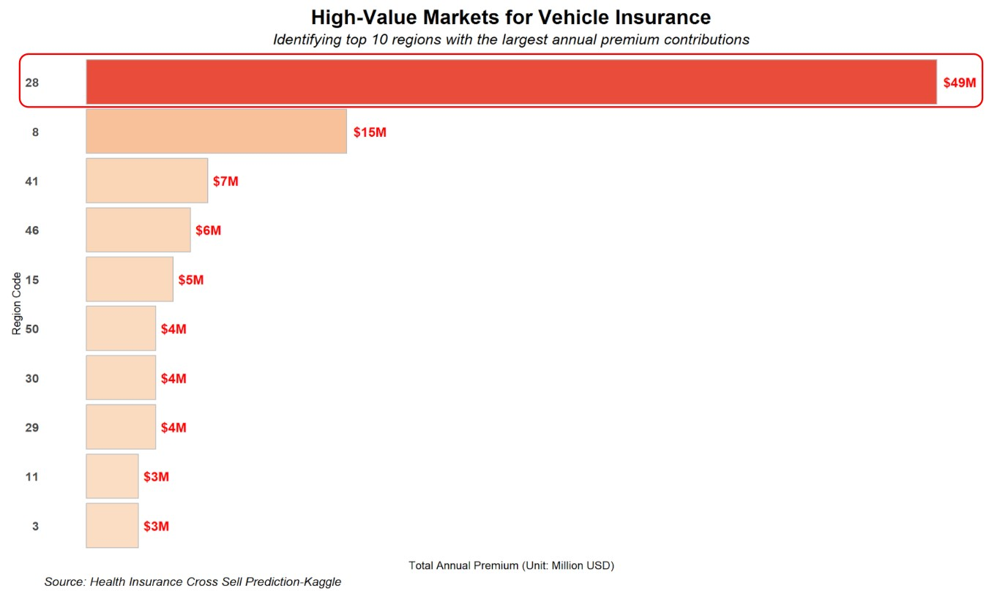
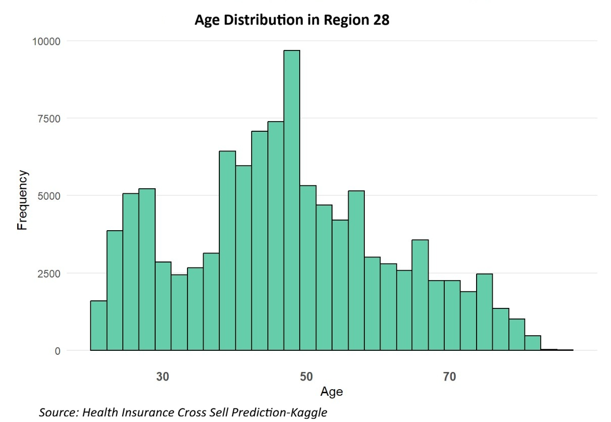
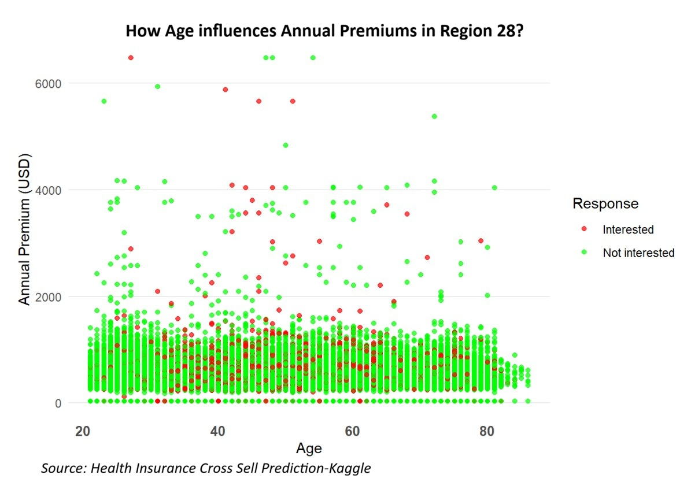
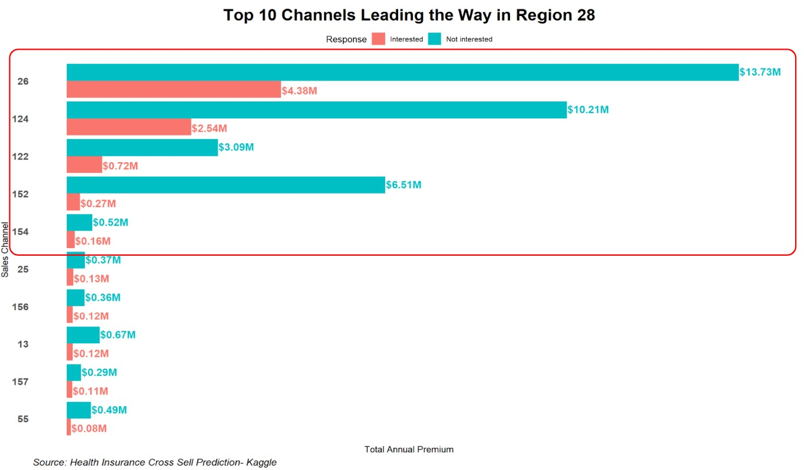
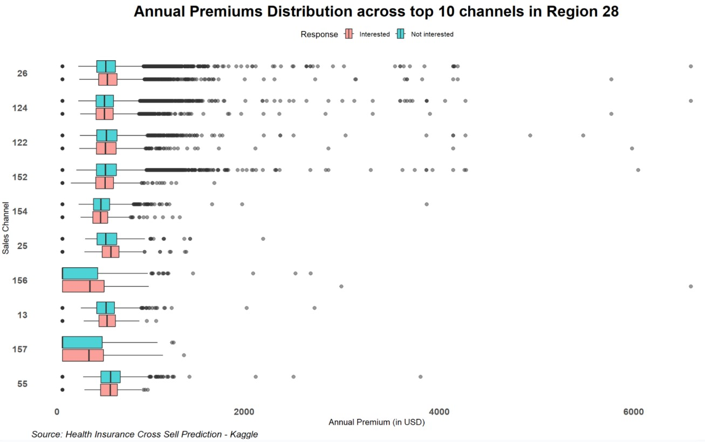

Project Overview
A health insurance company in India is evaluating an expansion into vehicle insurance. Using cross-sell data, this analysis quantifies demand, identifies high-value opportunities, and translates insights into practical go-to-market recommendations.
Data Analysis
Main Questions
- Assess the market potential for vehicle insurance based on customer demand and premium distribution.
- Determine how to allocate marketing budget for fast growth—specifically which regions, sales channels, and customer segments should be prioritized in the short term.
Results



These charts highlight several key insights:
- Large Untapped Opportunity: While current penetration in vehicle insurance is still modest, the data suggests meaningful upside by capturing share from competitors—especially in regions with strong demand and premium potential.
- Region 28 is the Growth Engine: Region 28 leads in interested customers and stands out with the highest premium contribution. The large pool of uninterested customers also signals heavy competitive focus—making it the best target for conversion campaigns and sales follow-up.




Recommendations:
- Focus on Region 28: Run targeted regional campaigns and partner initiatives to strengthen presence where demand and premium potential are highest.
- Double Down on Key Channels: Maintain investment in the top-performing channels (26/124/122/152/154) to maximize reach and conversion efficiency.
- Improve Sales Follow-up & Retention: Prioritize high-intent customers with structured follow-ups, tailored messaging, and stronger relationship management to increase close rates and long-term value.
-
Convert the “Not Interested” Pool:
In Region 28, deploy conversion playbooks (re-targeting, offers, and sales scripts) to win customers back from competitors.
With ~86.5k uninterested customers in Region 28, converting just 100 customers (~0.1%) is a realistic near-term goal and would create measurable impact given current sales capacity.